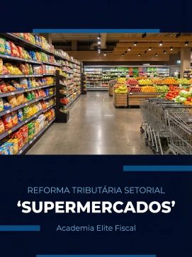
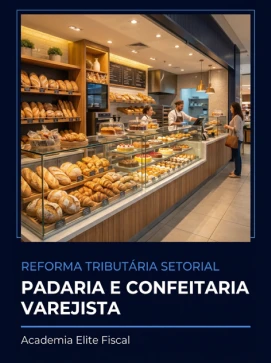
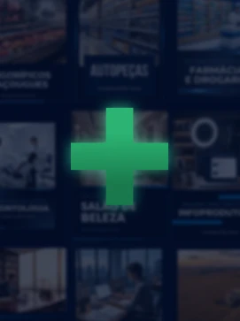

Nota emitida errada
Novos campos, novas classificações e novas rejeições.
DOMINE A REFORMA | ATUALIZADO ATÉ 2033 | INVESTIMENTO ÚNICO
A Reforma já começou. Este é o único investimento que você precisa para dominá-la.
QUERO DOMINAR A REFORMAOs documentos fiscais já passaram a exigir o destaque de IBS e CBS. Em 2027, a CBS substitui o PIS e a Cofins. Cada uma dessas mudanças chega ao seu escritório em forma de pergunta do cliente.
E quem não tiver a resposta vai sentir no bolso:
Novos campos, novas classificações e novas rejeições.
Sem entender a não cumulatividade, o cliente paga a mais.
A carga muda e a margem do cliente some sem ele perceber.
Ele vai procurar o contador que souber responder primeiro.
Uma explicação em uma live, outra em um artigo, uma atualização no grupo, uma regra em uma nota técnica. Quando o cliente pergunta, ainda falta transformar tudo isso em uma resposta organizada.
O contador que entender a Reforma primeiro vai ser o contador que os clientes vão procurar.
Você não sabe qual conteúdo estudar primeiro nem como conectar uma regra à outra.
Clientes de setores diferentes precisam de perguntas e análises diferentes.
Cada novidade exige uma nova busca, interpretação e explicação.
Quem deixar para estudar quando a etapa chegar já vai estar atrasado. No curso, o conteúdo é atualizado a cada fase, até 2033, para você chegar antes do seu cliente perguntar.
Novas exigências nos documentos fiscais, destaque de IBS e CBS e preparação dos sistemas.
Escolhas sobre CBS e o Simples Nacional (convencional ou híbrido) passam a impactar o caixa do cliente.
Revisão gradual de cadastros, documentos, contratos, preços e processos.
O novo sistema assume o centro da tributação sobre o consumo.
É para você se...
Não é para você se...
O Reforma Tributária Aplicada foi estruturado para quem precisa entender a legislação e responder às perguntas dos clientes com segurança e clareza.
LC 214/2025, LC 227/2026, IBS, CBS, Imposto Seletivo, Comitê Gestor e as bases legais do novo sistema.
Fato gerador, base de cálculo, créditos, documentos fiscais, obrigações, split payment e o que muda na rotina do escritório.
Como a mesma Reforma gera perguntas diferentes em cada negócio.
Uma rotina para acompanhar as mudanças sem recomeçar o estudo a cada nova orientação.
15 módulos e mais de 19 horas de conteúdo
Novas aulas entram na plataforma conforme a regulamentação avança.
regras específicas, documentos e tributação
compra, venda, margem e créditos
vendas digitais, operação e documentos fiscais

mix de produtos, créditos e precificação
serviços educacionais e regras aplicáveis
cadeia produtiva, insumos e classificação
Imposto Seletivo e pontos de atenção
operações, créditos e formação de preço

comércio, produção e tributação
regimes e particularidades do segmento
produtos, serviços e classificação fiscal
prestação, documentos e operação logística
insumos, vendas e composição do preço

conteúdo setorial em atualização contínua
Simule os efeitos tributários na formação de preço conforme as premissas da operação.

O passo a passo para decidir, com o cliente, qual caminho faz mais sentido.


50 segmentos analisados: como IBS, CBS e IS afetam cada negócio na prática.

Cláusulas fiscais para contratos com clientes e com fornecedores.

O que muda, o que fica e o que o profissional precisa saber.

Tudo o que você precisa dominar antes de orientar seus clientes.

Como usar o cClassTrib na prática.
Bônus válidos só durante a Black da Reforma.
A Reforma muda o consumo, mas o IR e a CSLL continuam seguindo as regras de cada regime. Domine as regras gerais do Simples Nacional, do Lucro Presumido e do Lucro Real, com IR, CSLL e a base contábil de cada apuração. É o que garante que você atenda bem o cliente hoje, enquanto se prepara para amanhã.

Simule cenários de IBS e CBS para cada empresa do Simples Nacional e compare o recolhimento convencional com o híbrido. Os números ficam prontos para você levar à reunião e mostrar ao cliente qual caminho faz mais sentido.

Chega de abrir a plataforma sem saber por onde começar. O Plano de Ação mostra a ordem certa de estudo, o que consultar primeiro e como encaixar a Reforma na sua rotina, mesmo com pouco tempo.

Boletim Tributário semanal + grupo de avisos no WhatsApp. Toda semana, um resumo com as principais atualizações da Reforma. No grupo, os avisos importantes chegam direto no seu celular. Você para de caçar notícia e passa a receber só o que impacta seus clientes.

“Sua abordagem é direta, objetiva e totalmente aplicável à prática profissional. Cada explicação é construída com clareza e propósito, entregando conhecimento que gera resultados reais.”
“O professor Bruno tem um método de ensino dinâmico, direto e totalmente aplicável. Ele consegue transformar temas complexos em algo claro e objetivo, o que faz toda diferença.”
“O conteúdo é extremamente completo, prático e atualizado, trazendo uma visão clara e direta sobre o mundo fiscal e tributário. A didática do Bruno é excelente ele consegue explicar temas complexos de forma leve e aplicável no dia a dia.”
“Os cursos são bastante ricos de informações e o melhor é que você compreende com facilidade, pois existem exemplos práticos e com uma linguagem bem simples!”
“Cada aula é uma bênção de conhecimentos em minha carreira.”
“O conteúdo é bem estruturado e facilita o aprendizado, especialmente para quem quer se aprofundar na área fiscal.”
“Vale a pena escolher o conteúdo do Bruno Viana, por ser um conteúdo de alto nível e com fácil didática com muita aplicabilidade na prática.”
“O Bruno nos ensina através da fundamentação e de práticas do dia a dia de um profissional da área tributária.”
Entre agora na Black da Reforma e tenha uma estrutura completa para estudar, consultar e aplicar a Reforma Tributária na realidade de cada cliente, com acesso vitalício.
O que está incluso
Você tem 7 dias completos para acessar o curso, assistir às aulas, abrir os materiais e avaliar o método.
Se por qualquer motivo sentir que este não é o investimento certo para você, basta enviar um único e-mail e devolvemos 100% do seu dinheiro. Sem burocracia, sem perguntas, sem ressentimentos.
O risco é todo nosso. A decisão é toda sua.
Com 15 anos de experiência na área tributária, Bruno Viana é referência nacional em tributação e palestra sobre Reforma Tributária em eventos por todo o país. É reconhecido por simplificar a legislação brasileira e transformar termos técnicos em conhecimento aplicável.
Ao longo da carreira, auditou mais de R$ 50 milhões em autos de infração de ICMS, desenvolvendo uma abordagem focada em identificar onde os erros acontecem e quais perguntas precisam ser feitas antes de orientar um cliente.
Criador da Mentoria Contador Tributarista, onde alunos que aplicaram a metodologia dobraram seus faturamentos, e responsável pela Pós-Graduação em Reforma Tributária e Compliance Empresarial reconhecida pelo MEC.
Fundador da Academia Elite Fiscal, já impactou mais de 5 mil alunos e reúne 67 mil seguidores que acompanham seus conteúdos sobre a Reforma.
Sua missão: transformar legislação complexa em conhecimento prático que gera resultados reais.
O acesso vitalício só existe durante a Black da Reforma. Depois, o curso volta a ter acesso por tempo limitado.
Sim. Você terá acesso para sempre ao curso Reforma Tributária Aplicada, com atualizações do conteúdo até 2033 e suporte para dúvidas até 2029.
Não. Ele combina base legal, aplicação na operação, análise por setor e ferramentas prontas para usar com seus clientes.
Não. O curso é atualizado conforme a regulamentação avança, e você recebe o Boletim Tributário semanal e os avisos do grupo no WhatsApp.
Porque a Reforma muda os tributos sobre o consumo, mas o IR e a CSLL continuam seguindo as regras de cada regime. O bônus complementa o curso para você orientar o cliente por completo.
Sim. O Plano de Ação mostra a ordem certa de estudo, e as aulas são diretas, pensadas para a rotina de quem já está no escritório.
Sim. O acesso é liberado assim que o pagamento é confirmado.
Sim. Em até 12x de R$ [PARCELA] no cartão, ou R$ [VALOR] à vista no Pix ou boleto.
Você tem 7 dias de garantia incondicional. Basta enviar um e-mail e devolvemos 100% do valor.
Continuar estudando em pedaços, pagando um curso novo a cada mudança e correndo para não perder cliente.
Fazer o único investimento que você precisa para dominar a Reforma Tributária, com atualizações até 2033.
Ficou com alguma dúvida? Fale agora com um dos nossos consultores pelo WhatsApp e tire suas dúvidas sobre a Black da Reforma.
TIRAR DÚVIDAS PELO WHATSAPP